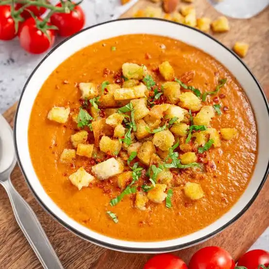
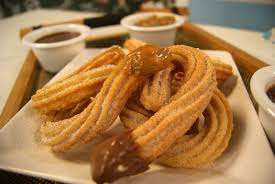
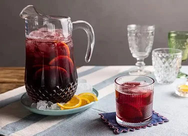
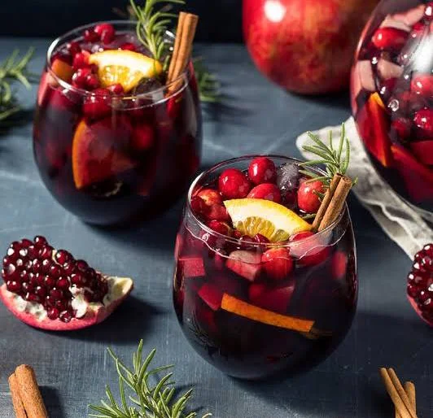

A culinária espanhola combina tradição, ingredientes frescos e receitas que mudam de região para região.
A Espanha possui uma culinária rica e diversificada, marcada por sabores intensos e ingredientes frescos como azeite de oliva, frutos do mar, carnes e especiarias. Pratos tradicionais como a paella e as tapas refletem a cultura social do país, onde compartilhar refeições é parte essencial do estilo de vida. A gastronomia espanhola combina tradição e criatividade, sendo uma das mais apreciadas do mundo.

SGaspacho ou caspacho é uma sopa fria à base de hortaliças, com destaque para o tomate, o pepino e o pimentão, muito popular no sul de Portugal, no sul de Espanha, bem como no México e outros países centro-americanos. É geralmente produzido e consumido no verão.
Batatas bravas são um prato originário da Espanha. Consiste tipicamente em batatas brancas cortadas em cubos, fritas em óleo e servidas quentes com um molho picante "bravo". O molho bravo é feito principalmente com páprica doce ou defumada e azeite, frequentemente engrossado com amido de milho..

Churro é um alimento de origem ibérica, preparado com massa à base de farinha de trigo e água, em formato cilíndrico e frito em óleo vegetal. Logo após, pode ser salpicado com uma camada de açúcar por fora..

Traduzido do inglês-Tinto de verano é uma bebida gelada à base de vinho, popular na Espanha. É semelhante à sangria e geralmente é composta por uma parte de vinho tinto de mesa e uma parte de refrigerante, geralmente com sabor de limão.

A sangria, também bastante conhecida como zurra, é uma bebida ou coquetel feita com base numa mistura de vinho tinto ou vinho branco, suco de fruta, pedaços de frutos e açúcar. Pode levar outras bebidas como aguardente, conhaque ou licor. Deve ser bebida bem fresca, recorrendo, se necessário, a gelo..